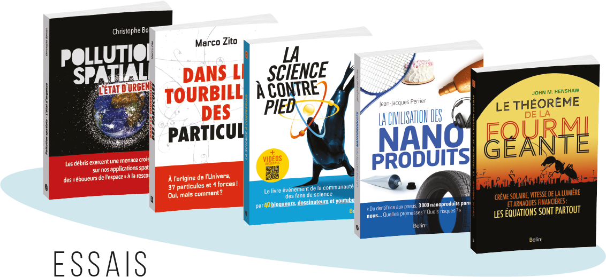
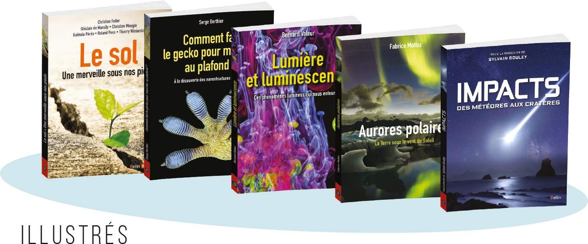
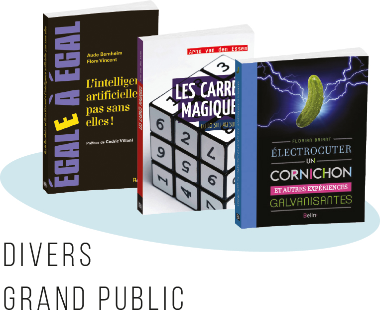

- pilotage de projets éditoriaux et édition de livres illustrés et livres noirs
- suivi des intervenants et coordination d’équipe (iconographes, illustrateurs, maquettistes)
- planification de projets collectifs lourds
- recherche de prestataires, élaboration de devis et comptes d’exploitation
- encadrement d’auteurs de profils variés : chercheurs, primo-écrivains, youtubeurs, etc.
- étude du marché et conception d’une nouvelle collection de livres illustrés
- relecture d’épreuves
- lissage de texte après traduction
- élaboration de compléments numériques variés aux manuels
- saisies texte et corrections sous InDesign
Machin marrant pour présenter les bouquins et ce que j’ai fait dessus
  